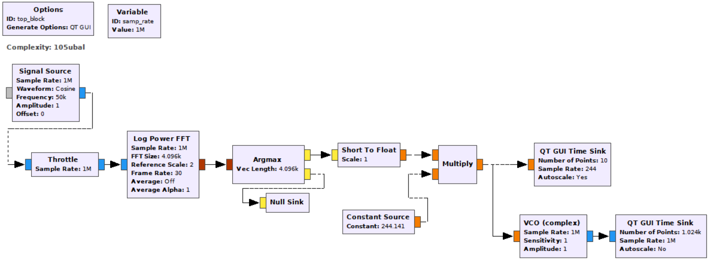
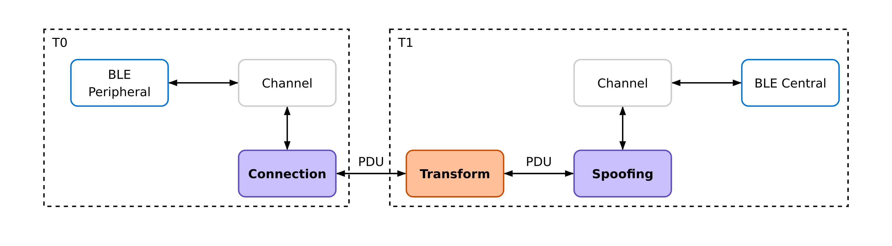
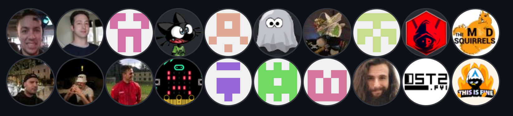

Durant la conception, on s'est demandé quels outils étaient vraiment indispensables dans WHAD ...

Est-ce qu'on ne pourrait pas décrire les attaques sans fil comme une combinaison de briques de base ?


Dans ce cas, on a juste à implémenter ces briques ...


... et voir comment les chercheurs les combinent pour construire des attaques !

Implémenté avec seulement 2 briques de base !
Nous vous suggérons la lecture des actes de SSTIC pour une description détaillée des briques de base, ou primitives, que nous allons introduire relativement brièvement dans cette présentation.
Le sens de circulation des données est important ...

... mais aussi le timing !


«Un attaquant peut créer un chemin depuis n'importe quel nœud du réseau vers n'importe quel autre en forgeant et transmettant une PathRequest»

«Un attaquant peut empoisonner la table de routage du nœud à l'origine d'un chemin en répondant immédiatement à une PathRequest par l'usurpation d'un PathReply avant le nœud légitime.»

«Un attaquant peut se connecter à un équipement BLE, transmettre des données d'annonces clonées, attendre une connexion entrante et altérer les données échangées.»


 )
)
cat /etc/passwd | grep root 😱
$ tool1 | tool2 | tool3


$ wsniff -i yardstickone0 phy -f 433920000 --ask -d 10000 |
↳ wdump doorbell-capture.pcap
$ wplay doorbell-capture.pcap | winject -i yardstickone0

$ wble-connect -i hci0 f2:c5:37:8b:cd:a2 -r |
↳ wfilter -f -t "p.data=bytes.fromhex('6f71710600014861636b218f')"
↳ "b'Hello' in p[ATT_Write_Request].data" |
↳ wble-spawn -i hci1 -p watch.json

$ wsniff -i uart0 rf4ce -c 15 | wanalyze
$ wsniff -i uart0 rf4ce -c 15 -d -k ENC_KEY |
↳ wdump rf4ce-cleartext.pcap

$ wsniff -i rfstorm0 phy --gfsk --datarate 1000000 -w a6c5e81e
↳ -f 2457000000 -s 16 | wserver --ws --json
function initHealthBar() {
const socket = new WebSocket('ws://localhost:12345');
socket.addEventListener('message', function (event) {
/* Extract HR value from packet. */
let packet = JSON.parse(event.data)["Phy_Packet"]
let value = parseInt(packet["data"].substr(28,2), 16);
/* Update HTML health bar using HR value. */
setNumber(value);
});
}



Les Actes du SSTIC contiennent une description détaillée de notre systématisation, de ses primitives et des modèles d'attaques considérés.
Romain Cayre
Damien Cauquil